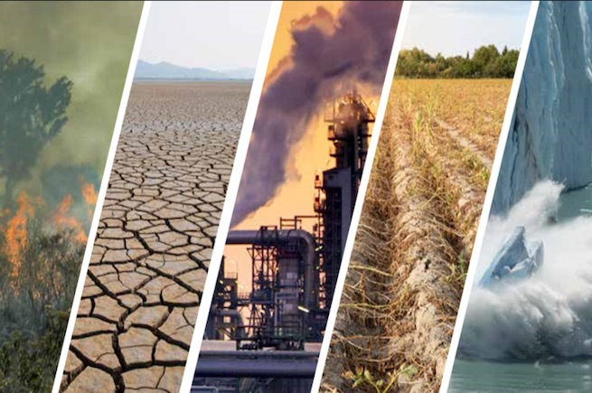

مسؤولية الإنسان في ظاهرة الاحتباس الحراري
يشير تغير المناخ إلى التحولات طويلة الأجل في درجات الحرارة وأنماط الطقس. يمكن أن تكون هذه التحولات طبيعية، بسبب التغيرات في نشاط الشمس أو الانفجارات البركانية الكبيرة.
ولكن منذ القرن التاسع عشر، كانت الأنشطة البشرية هي المحرك الرئيسي لتغير المناخ ، ويرجع ذلك أساسًا إلى حرق الوقود الأحفوري مثل الفحم والنفط والغاز.
ينتج عن حرق الوقود الأحفوري
انبعاثات غازات الاحتباس الحراري التي تعمل مثل غطاء ملفوف حول الأرض، مما يؤدي إلى حبس حرارة الشمس ورفع درجات الحرارة.
تشمل غازات الدفيئة الرئيسية التي تسبب تغير المناخ ثاني أكسيد الكربون والميثان. تأتي هذه من استخدام البنزين لقيادة السيارة أو الفحم لتدفئة مبنى،
على سبيل المثال. يمكن أن يؤدي تطهير الأراضي وقطع الغابات أيضًا إلى إطلاق ثاني أكسيد الكربون. تعتبر عمليات الزراعة والنفط والغاز من المصادر الرئيسية لانبعاثات غاز الميثان.
تعد الطاقة والصناعة والنقل والمباني والزراعة واستخدام الأراضي من بين القطاعات الرئيسية المسببة لانبعاثات غازات الاحتباس الحراري.

مشكلة تغير المناح علي العالم
الناس يعانون من تغير المناخ بطرق مختلفة
يمكن أن يؤثر تغير المناخ على صحتنا وقدرتنا على زراعة الغذاء والسكن والسلامة والعمل. البعض منا أكثر عرضة بالفعل لتأثيرات المناخ، مثل الأشخاص الذين يعيشون في الدول الجزرية الصغيرة والبلدان النامية الأخرى. لقد تطورت ظروف مثل ارتفاع مستوى سطح البحر وتسلل المياه المالحة إلى النقطة التي اضطرت فيها مجتمعات بأكملها إلى الانتقال، كما أن فترات الجفاف التي طال أمدها تعرض الناس لخطر المجاعة. في المستقبل، من المتوقع أن يرتفع عدد "لاجئي المناخ".

كل زيادة في ظاهرة الاحتباس الحراري مهمة
في سلسلة من تقارير الأمم المتحدة ، اتفق الآلاف من العلماء والمراجعين الحكوميين على أن الحد من ارتفاع درجة الحرارة العالمية إلى ما لا يزيد عن 1.5 درجة مئوية سيساعدنا على تجنب أسوأ التأثيرات المناخية والحفاظ على مناخ صالح للعيش. ومع ذلك، تشير السياسات المعمول بها حاليًا إلى ارتفاع درجة الحرارة بمقدار 2.8 درجة مئوية بحلول نهاية القرن.
تأتي الانبعاثات التي تسبب تغير المناخ من كل جزء من العالم وتؤثر على الجميع، ولكن بعض الدول تنتج أكثر بكثير من غيرها . الاتحاد، والبرازيل) يمثلان حوالي نصف جميع انبعاثات غازات الاحتباس الحراري العالمية في عام 2020.
يجب على الجميع اتخاذ إجراءات مناخية، لكن الناس والبلدان التي تخلق المزيد من المشكلة تتحمل مسؤولية أكبر للعمل أولاً.
نواجه تحديات كبيرة، ولكننا لدينا العديد من الحلول
يمكن أن تقدم العديد من حلول تغير المناخ
خ فوائد اقتصادية مع تحسين حياتنا وحماية البيئة. لدينا أيضًا أطر عمل واتفاقيات عالمية
توجيه التقدم، مثل أهداف التنمية المست
دامة واتفاقية الأمم المتحدة الإطارية بشأن تغير المناخ واتفاقية باريس . ثلاث فئات واسعة من الإجراءات هي: خفض الانبعاثات، والتكيف مع تأثيرات المناخ، وتمويل التعديلات المطلوبة.
سيؤدي تحويل أنظمة الطاقة من الوقود الأحفوري إلى مصادر الطاقة المتجددة مثل الطاقة الشمسية أو طاقة الرياح إلى تقليل الانبعاثات التي تؤدي إلى تغير المناخ. لكن علينا أن نتحرك الآن. بينما يلتزم عدد متزايد من البلدان بصافي انبعاثات صفرية بحلول عام 2050،
يجب خفض الانبعاثات إلى النصف بحلول عام 2030 للحفاظ على الاحترار أقل من 1.5 درجة مئوية. يعني تحقيق ذلك حدوث انخفاضات هائلة في استخدام الفحم والنفط والغاز:
يجب الاحتفاظ بأكثر من ثلثي الاحتياطيات المؤكدة اليوم من الوقود الأحفوري في الأرض
بحلول عام 2050 من أجل منع المستويات الكارثية لتغير المناخ.
.jpg)